Trolley
Load up the project you saved at the end of the last module.
Paint a new sprite named 'Trolley'. This will act as a button to let you open the shop.
In the drawing area, draw an icon for a shopping trolley. It should be about 30 × 30 pixels in size (about 6 × 6 chequered squares). Mine looks like this:
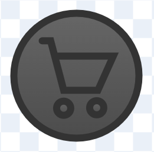Drag the sprite to the right of the Cash display:
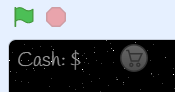It's nice if buttons change in some way when your mouse is over them — it lets you know that they're clickable. Let's make our trolley icon brighter on 'mouse over'.
Switch to the Code tab. When the green flag is clicked, let the icon forever check if it's touching the mouse pointer. If so, increase the brightness; if not, return to normal brightness:
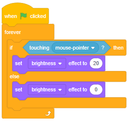Click the green flag. What happens as you move your mouse over the trolley?
When the trolley icon is clicked, we want to broadcast 'Opening shop'. We know it's been clicked if:
- it's touching the mouse pointer, and
- the mouse button is down.
There's a problem with this code. Can you spot it?
Right — that forever loop runs forever, so if someone clicks and holds down the mouse button, both if-conditions will be true, so we'll keep broadcasting over and over again.
We can fix that by waiting until the mouse button has been released before broadcasting:
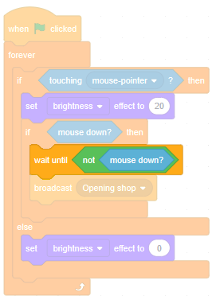Now we need to make a Shop sprite that will listen out for any 'Opening shop' messages. Before we do, however, we need to stop this icon from lighting up when the game is over. Add a script that does that:

Good. Shop time.
Shop
Paint a new sprite named 'Shop'. Make sure that its x and y are both zero:
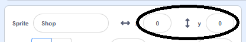Draw a rectangle that tucks underneath the Cash display. I've given mine a slight gradient:
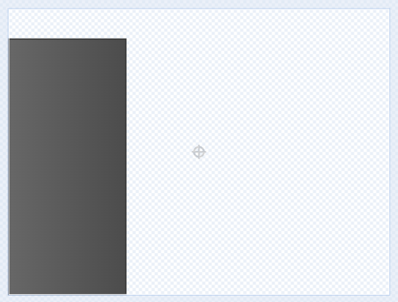We want this shop sprite to be off-screen when the game starts, then to glide into view when it receives 'Opening shop'. My costume is 150 pixels wide (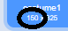) so, when the green flag is clicked, I need to go to (-150, 0). If your costume has a different width, you'll need to adjust the starting position.
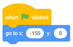Click the green flag. Does the shop start fully off-screen?
Remember that the Scratch website, wanting to be helpful, doesn't let you move sprites off-screen. We solved this problem before — do you remember how?
There's another way we can fix it — paint a transparent rectangle in the centre of the costume:
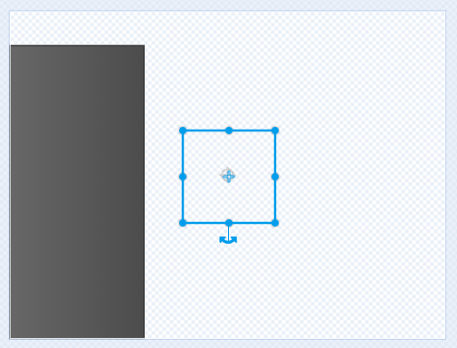Click the green flag. Does the shop now start fully off-screen?
Correct. Now, when the Shop receives 'Opening shop', it should glide into view:
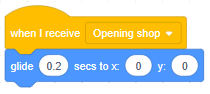Click the green flag, then click the trolley icon. What happens?
It looks better if the shop is slightly transparent. Set the ghost effect to 25 when the green flag is clicked:
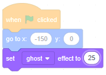Click the green flag — is the shop slightly see-through?
Once the shop has glided into view, we need to broadcast 'Opened shop' — that's the moment when we're ready to show items in the shop:
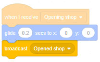At some point we'll also want to close the shop. Add some code to glide out of view on receiving 'Closing shop':
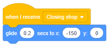Good. Time to put a turret in our shop.
Turret
Paint a new sprite named 'Turret icon'. Copy and paste the first costume in the Turret sprite into the Turret icon sprite (Ctrl + A to select all, Ctrl + C to copy, Ctrl + V to paste). Add a drop shadow:

Add some code to hide the sprite when the green flag is clicked, to show it on receiving 'Opened shop' and to hide it on receiving 'Closing shop':
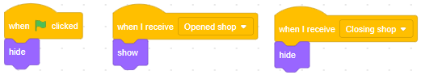Click the green flag and click the trolley icon. What happens?
We want the turret icon in the shop, not in the middle of the stage. Drag it into position:
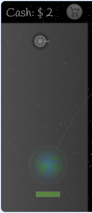Let's close the shop if the user moves their mouse out.
Switch back to the Shop sprite. If your shop is 150 pixels wide, your mouse will be out of the shop if it has an x position greater than -90 (because -240 + 150 = -90)... add some code to broadcast 'Closing shop' if that happens:
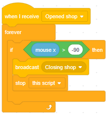Click the green flag, click the trolley icon, and move your mouse around the stage. What happens?
Good. Now we want users to be able to click that turret icon and place a new turret on the stage.
Placement
Firstly, switch back to the turret icon, and let's make it light up on mouse-over, just like we did for the trolley icon:
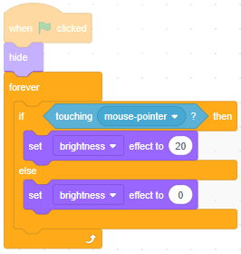Test your code. Does the turret icon light up on mouse-over?
Add some code such that, when the icon is clicked, it creates a clone of the Turret sprite (use the wait-until-not-mouse-down trick again to ensure the mouse button has been released before we start cloning):
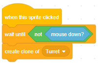Click the green flag, open the shop, and click the turret icon. Is a new turret clone created? (Hint — remember that clones are created exactly where their template is, so you might need to drag the template to one side and 'look underneath it'.)
Good. Switch to the Turret sprite. The code currently here assumes we have a single Turret, but we're about to have lots of clones.
Unsnap the forever-loop from the when  clicked:
clicked:
The when clicked now needs to hide the template, and
we need a when I start as a clone to show the clones, and to run the forever-loop that we just unsnapped:
Click the green flag, open the shop and click the turret icon. What happens?
We want to be able to place the turret where we want it. So, just before the forever-loop, add some code that repeatedly moves the clone to the mouse-pointer, until the mouse button is pressed:
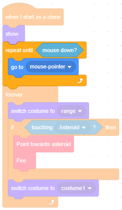Click the green flag, open the shop and click the turret icon. What happens?
Good. Time for some polish.
Polish
1. Make sure that, when new turret clones are created, they point in the same direction as the turret icon, i.e. direction 90:
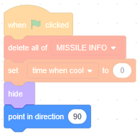2. It's helpful to know the range of a turret when placing it. So, let's use the range costume while we're placing each turret clone:
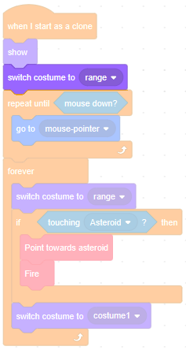3. It looks better if the turret is partly see-through while we place it — set a ghost effect of 50, and remember to set it back to 0 after we've placed it:
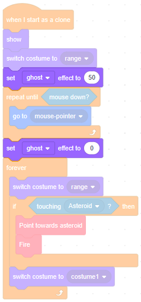Test your code changes. Did they work as expected?
Let's add a smoke trail behind the missiles. The code will be similar to Module 6 — Particles...
Firstly, paint a new sprite named 'Smoke':
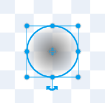Switch to the Code tab, create a list (for all sprites) named SMOKE INFO and add the following scripts:
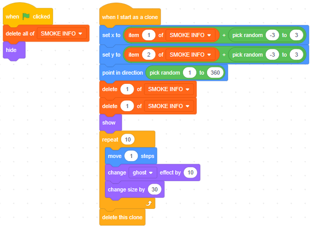Then, in the Missile sprite's code editor, add the below code blocks:
 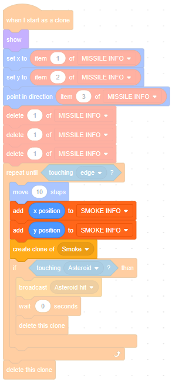
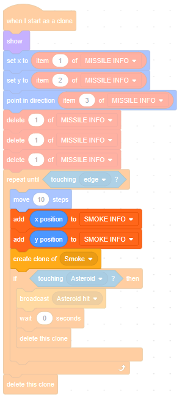
Click the full screen button, click the green flag, place some turrets on the stage and watch them destroy the asteroids.
Next steps
Save your project.
In the next module we will:
- create different kinds of turrets
Feel free to try that out beforehand, or to try a different idea of your own instead.
What did you think of this module?
I didn't like it

It was OK

I loved it